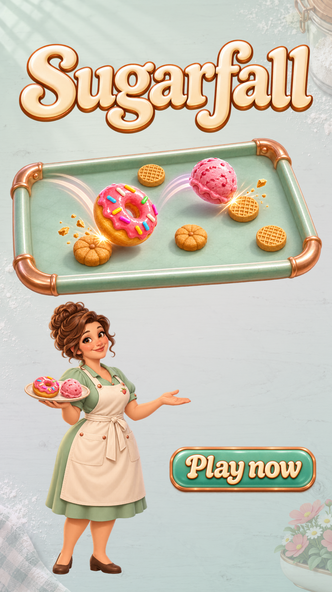

Local review · 30 seconds
Sugarfall trailer V4
A left-side gameplay close-up now leads into the real cream transition and a nearly completed Gelato upgrade map. Mabel’s greeting, catches and exit keep their V3 timing.
The ending groups the tray closer to the Sugarfall title, adds painted background details, and fades and settles the layers one by one.
Ending artwork · Download MP4 · Timing and changes
The video stays local. Painted character motion is a trailer overlay; the game footage stays at normal speed. The supplied music performance remains a private reference pending publication clearance.
